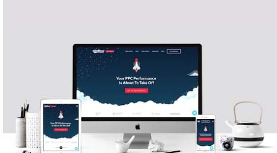

|
Service Workers
Un service worker, es un proxy entre el navegador y el servidor. A un service worker le puedes decir que responda de X o Y manera a las peticiones, sin llegar al servidor, puede interceptar las peticiones, delegarlas al servidor, o rechazarlas... lo que quieras. ¿Cuál es el beneficio? Las intenciones de los service workers son 2:
- Acceso offline a la página
- Sitios web que cargan rapidísimo (incluso más rápido que las apps nativas)
Para cumplir los dos objetivos antes mencionados, ServiceWorker hace uso de 2 nuevos
API's, fetchy cache. Fetch le permite manejar las peticiones que van de la app web al servidor, mientras que Cache, le permite almacenar archivos en el Cache de tu computadora.
|
|  |
Responsive design
Responsive Design es una técnica con la que tus aplicaciones se adaptan al tamaño de pantalla en que se ejecutan, no hay mucho qué decir, es un concepto bien establecido y conocido.
Algunos conceptos que se aplican en Responsive Design, es el diseño fluido, en lugar de usar tamaños fijos y posiciones absolutas, desarrollamos nuestro layout de tal manera que fluya con la pantalla. Otro tema interesante es el diseño Mobile First, en donde diseñamos el contenido, primero, con la forma en que se mostrará en móviles, y luego incrementamos conforme la pantalla lo hace, este es un enfoque que trabaja a la inversa de como la mayoría de los frontends programan. Siguiente, tenemos a las Media Queries, que son reglas de CSS que se aplican únicamente a ciertos tamaños o tipos de pantalla.
Responsive Design no es solo una cuestión de tamaños, también es una cuestión de features. ¿Cómo se ve tu página web en un app de lectura como Pocket? ¿En un lector de feeds como Feedly? ¿Cómo se ve si intento imprimirla?. |
|
Apis
Una API es un conjunto de definiciones y protocolos que se utiliza para desarrollar e integrar el software de las aplicaciones. API significa interfaz de programación de aplicaciones.
Las API permiten que sus productos y servicios se comuniquen con otros, sin necesidad de saber cómo están implementados. Esto simplifica el desarrollo de las aplicaciones y permite ahorrar tiempo y dinero. Las API le otorgan flexibilidad; simplifican el diseño, la administración y el uso de las aplicaciones, y proporcionan oportunidades de innovación, o cual es ideal al momento de diseñar herramientas y productos nuevos (o de gestionar los actuales).
A veces, las API se consideran como contratos, con documentación que representa un acuerdo entre las partes: si una de las partes envía una solicitud remota con cierta estructura en particular, esa misma estructura determinará cómo responderá el software de la otra parte.
|
|
Apshell
Una arquitectura de shell de aplicación (o shell de app) es una forma de crear una Progressive Web App que se carga al instante y de manera confiable en la pantalla de tu usuario, en forma similar a lo que ves en las apps nativas.
La "shell" de app es la mínima cantidad de HTML, CSS y JavaScript requeridos para activar la interfaz de usuario, y cuando se almacena en caché sin conexión puede asegurar un rendimiento instantáneo y de alta confiabilidad para los usuarios en las visitas repetidas. De esta manera, la shell de la app no se carga desde la red en cada visita del usuario. Solo se carga el contenido necesario de la red.
Para apps de una sola página con arquitecturas con mucho código JavaScript, una shell de app es un enfoque acertado. Este enfoque se basa en almacenar la shell agresivamente en caché (utilizando un service worker para lograr que la app funcione. Luego, el contenido dinámico carga cada página a través de JavaScript. Una shell de app es útil para enviar el HTML inicial a la pantalla en forma rápida y sin utilizar una red.
|